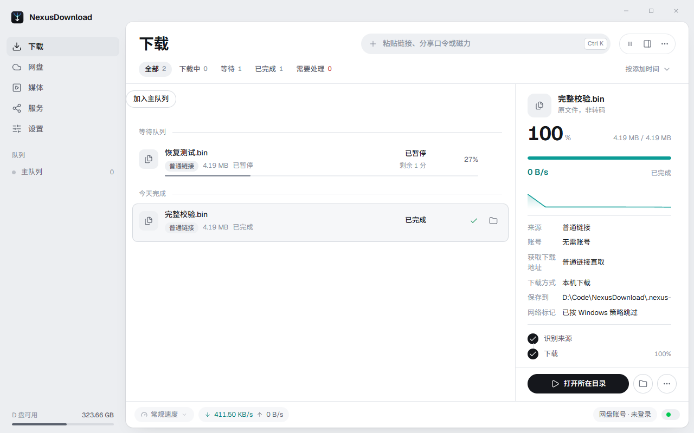

网盘里的文件，直接下到本地。
支持六家网盘的账号、文件与分享下载，创建任务前检查权限、大小和空间。下载方式依平台授权选择；阿里云盘需自有应用及独立分享授权，真实账号权限仍需自行检测。
百
百度网盘分享需转存
夸
夸克网盘支持无需转存
U
UC 网盘区分播放版本
阿
阿里云盘需自有授权
115
115 网盘可选离线下载
123
123 云盘登录后下载
普通链接、BT、网盘、视频与图集，统一管理。支持队列计划、局域网手机投递和 AI 助手接口。为 Windows 打造，免费开源。
选中任务，查看来源、账号、下载方式与处理进度。

支持六家网盘的账号、文件与分享下载，创建任务前检查权限、大小和空间。下载方式依平台授权选择；阿里云盘需自有应用及独立分享授权，真实账号权限仍需自行检测。
用原账号重新获取下载地址，确认文件身份与大小后继续。身份变化或账号异常时暂停。历史速度与成功率保存在本机，有足够样本时显示预计时间。
视频与图集可选择内容，支持动图和实况照片合成。下载后按设置校验、解压、调用本机扫描、标记并归类；失败步骤可单独重试。自动解压默认关闭，原件默认保留。
NexusDownload 无需注册，没有自己的服务器。网盘登录信息加密保存在本机，绑定当前 Windows 用户。
获取地址与下载由本机完成。第三方解析、离线与自管节点需自行配置授权，真实服务权限与额度需自行验收。
手机在可信局域网配对后投递与控制；MCP 仅本机访问，返回脱敏状态，删除文件须在应用确认。
检测登录、目录、下载地址与小段读取。报告不包含 Cookie、令牌、提取码或签名地址。